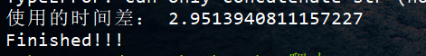

提升速度
多线程
使用单线程
import requests
import time
url_list = []
with open('test.txt', 'r') as f:
file_list = f.readlines()
for eachline in file_list:
url = eachline.replace("\n", '')
url_list.append(url)
start_time = time.time()
for eachone in url_list:
try:
res = requests.get(eachone)
print(res.status_code, eachone)
except Exception as e:
print("Error: ", e)
end_time = time.time()
print("时间差：", end_time-start_time)/image-20211226171713847.png)
函数方法
调用
_thread模块中的start_new_thread()函数产生新的线程
import _thread
import time
def print_time(threadname, delay):
count = 0
while count < 3:
time.sleep(delay)
count += 1
print("%s: %s" % (threadname, time.ctime(time.time())))
try:
_thread.start_new_thread(print_time, ("Thread-1", 1, ))
_thread.start_new_thread(print_time, ("Thread-2", 2, ))
print("Finished!!!")
except Exception as e:
print("启动线程失败：", e)
while 1:
pass类方法
使用
threading模块，继承threading.Thread()类
方法：
run():表示线程活动的方法
start():启动线程
join([time]):等待至线程终止
isAlive():返回线程是否是存活的
getName():返回线程名
setName():设置线程名
import threading
import time
class myThread(threading.Thread):
def __init__(self, name, delay):
threading.Thread.__init__(self)
self.name = name
self.delay = delay
def run(self):
print("Starting "+ self.name)
print_time(self.name, self.delay)
print("Exiting "+ self.name)
def print_time(thread_name, delay):
count = 0
while count < 3:
time.sleep(delay)
print(thread_name, time.ctime(time.time()))
count += 1
threads = []
thread1 = myThread("Thread-1", 1)
thread2 = myThread("Thread-2", 2)
thread1.start()
thread2.start()
threads.append(thread1)
threads.append(thread2)
for i in threads:
i.join()
print("Finished!!")使用队列完成多线程
queue模块使用
queue.Queue()FIFO，先入先出的一个队列queue.LifoQueue()LIFO，后入先出的一个队列queue.PriorityQueue()优先级队列，比较队列中每个数据的大小，值越小的拥有优先出队列的权力，一般使用元组的方式插入queue.SimpleQueue()简单队列
初始化操作：
import queue
q = queue.Queue(maxsize=5)
q = queue.LifoQueue(maxsize=5)
q = queue.PriorityQueue(maxsize=5)
q = queue.SimpleQueue() #不需要指定大小新增队列：
Queue.put(item, [block[, timeout]])
import queue
q = queue.Queue(maxsize=2)
q.put("我",block=True)
q.put("爱",block=True)
q.put("你",block=True)其中的item为必填项，block为True的时候使得调用线程堵塞在这里，知道空出一个空间来进行插入，timeout是当block为True的时候等待的时间，超时就会报错
取值：
Queue.get(block=True, timeout=None)
q.qsize()：队列大小；q.empty()：判断队列是否为空；q.full()：判断队列是否为满；q.get_nowait()：等价于q.get(False)，该方法使用参考上述取队列值部分内容；q.put_nowait(item)：等价于q.put(item, False)；q.task_done()与q.join()：这两个方法继续阅读后续内容
多线程请求
from types import resolve_bases
import requests
import time
import queue
import threading
url_list = []
with open('test.txt', 'r') as f:
file_list = f.readlines()
for file in file_list:
url = file.replace("\n", '')
url_list.append(url)
start_time = time.time()
class myThread(threading.Thread):
def __init__(self, name, q):
threading.Thread.__init__(self)
self.name = name
self.q = q
def run(self):
print("Starting "+ self.name)
while 1:
try:
crawler(self.name, self.q)
except Exception as e:
print("Error "+ e)
print("Exiting "+ self.name)
def crawler(name, q):
url = q.get(timeout=2)
try:
res = requests.get(url)
print(q.qsize(), name, res.status_code, url)
except Exception as e:
print(q.qsize(), name, url, 'Error: ',e)
#线程名称
thread_list = ["Thread-1", "Thread-2", "Thread-3", "Thread-4"]
#初始化队列
workQueue = queue.Queue(maxsize=10)
threads = []
#创建进程
for tname in thread_list:
thread = myThread(tname, workQueue)
thread.start()
threads.append(thread)
#加入队列
for url in url_list:
workQueue.put(url)
#等待完成所有线程
for i in threads:
i.join()
end_time = time.time()
print("使用的时间差：", end_time-start_time)
print("Finished!!!")
可以发现更加高效
多进程爬虫
充分利用多核计算机的CPU处理能力,多线程只能运行在单核上面
Queue+Process多进程爬虫
如果计算机是单核计算机,肯定就没有多进程这个说法了
查看CPU核数
import multiprocessing
number = multiprocessing.cpu_count()
print(number)多进程实例:
import multiprocessing
import time
import requests
url_list = []
with open('test.txt', 'r') as f:
file_list = f.readlines()
for file in file_list:
url = file.replace("\n", '')
url_list.append(url)
start_time = time.time()
class myprocess(multiprocessing.Process):
def __init__(self, name, q):
multiprocessing.Process.__init__(self)
self.name = name
self.q = q
def run(self):
print("Starting "+ self.name)
while not self.q.empty():
crawler(self.name, self.q)
print("Exiting "+ self.name)
def crawler(name, q):
url = q.get()
try:
res = requests.get(url)
print(q.qsize(), name, res.status_code, url)
except Exception as e:
print(q.qsize(), name, url, "Error:", e)
if __name__ == '__main__':
process_name = ["Process-1", "Process-2", "Process-3"]
workQueue = multiprocessing.Queue(10)
#填充队列
for url in url_list:
workQueue.put(url)
#创建进程
for name in process_name:
proc = myprocess(name, workQueue)
proc.daemon = True #父进程结束后，子进程就会自动被终止
proc.start()
proc.join()
end_time = time.time()
print("时间差为：", end_time-start_time)
print("Finished!!!!")Pool+Queue多进程爬虫
Pool可以指定进程数量给用户使用，当有请求提交到pool中的时候，如果这个池没有满，就用创建一个新的进程来进行提供给用户使用，如果这个池达到了饱和，这个请求就会继续等待，直到池中空出一个新的进程才会进行创建新进程给用户使用
阻塞和非阻塞
堵塞是等待到回调结果出来为止，在这个过程中这其中的所有程序都会被挂起。但是非阻塞就是不需要等到回调结果出来，就可以添加其他的进程使用
使用非阻塞的方式请求：
import multiprocessing
import requests
import time
url_list = []
with open('test.txt', 'r') as f:
file_list = f.readlines()
for file in file_list:
url = file.replace("\n", '')
url_list.append(url)
start_time = time.time()
def crawler(q, index):
Process_name = "Procee-"+str(index)
while not q.empty():
url = q.get()
try:
res = requests.get(url)
print(Process_name, q.qsize(), res.status_code, url)
except Exception as e:
print(Process_name, q.qsize(), url, "Error:", e)
if __name__ == '__main__':
manager = multiprocessing.Manager()
workQueue = manager.Queue()
#填充队列
for url in url_list:
workQueue.put(url)
pool = multiprocessing.Pool(processes=3)
for i in range(4):
pool.apply_async(crawler, args=(workQueue, i))
print("Started the Processes!")
pool.close()
pool.join()
end_time = time.time()
print("相差的时间：", end_time-start_time)
print("Finished!!")如果使用堵塞的方式请求：
将pool.apply_async()改为pool.apply()就行
多协程
python中的多协程使用
gevent这个库
from gevent import queue
import gevent
import requests
import time
from gevent import monkey #把可能有的IO操作单独做上标记
monkey.patch_all() #将IO转为异步执行的函数
url_list = []
with open('test.txt', 'r') as f:
file_list = f.readlines()
for file in file_list:
url = file.replace("\n", '')
url_list.append(url)
start_time = time.time()
def crawler(index):
Process_name = "Procee-"+str(index)
while not workQueue.empty():
url = workQueue.get()
try:
res = requests.get(url)
print(Process_name, workQueue.qsize(), res.status_code, url)
except Exception as e:
print(Process_name, workQueue.qsize(), url, "Error:", e)
def boss():
for url in url_list:
workQueue.put(url)
if __name__ == '__main__':
workQueue = queue.Queue(100)
#将队列内容整合到gevent中
gevent.spawn(boss).join()
pools = []
for i in range(4):
pools.append(gevent.spawn(crawler, i))
gevent.joinall(pools)
end_time = time.time()
print("相差的时间：", end_time-start_time)
print("Finished!!")反爬虫
方式：
- 不返回网页或者延迟返回网页的时间
- 返回网页为非目标网页(另一页，404页，访问多页为同一页)
- 设置登录验证
反反爬虫
- 修改
header头 - 修改爬虫时间间隔(模拟随机时间
random.randint(0,2)+random.random()) - 设置代理
中文乱码
编码方式的问题
requests模块的默认编码
import requests
res = requests.get(url)
print(res.encoding)如果网站不是使用的Unicode编码，就会导致中文乱码
解决：
requests.get(url)后面跟上res.encoding='xxxx'
非法字符解码
如果有多种编码存在，你需要解码
可以使用decode([encoding], [errors='strict'])
str1.decode('xxx', 'ignore')
第二个参数
ignore忽视非法字符replace使用其他符号代替xmlcharrefreplace使用XML字符引用代替字符
网页gzip压缩
res.content自动解码gzip
import chardet
after_gzip = res.content
print("解码后的编码：", chardet.detect(after_gzip))
#之后照着这个编码解码
print(after_gzip.decode('xxx'))读写文件的中文乱码
#读文件
with open('xxx', 'r', encoding='UTF-8') as f:
#写文件
with open('xxx', 'a+', encoding='GBK') as f:登录和处理表单
处理登录表单
通过F12检查他们的key值
构造出字典
有时候同样也有这样的隐藏元素hidden
然后通过requests.session()创建session会话
验证码的处理
- 人工识别
- OCR识别处理
人工识别
- 得到验证码的图片下载链接
def get_image_url():
url = "http://www.santostang.com/wp-login.php?action=register"
#获取注册页面代码
res = session.get(url, headers = headers)
html = res.text
#设置正则匹配image
regex = r"src='(.*?)' class='captcha_code_img' id='captcha_code_img'"
#使用re.search()方法
image_url = re.search(regex, html).group(1)- 下载验证码图片并自动打开
def get_content():
url = get_image_url()
res = session.get(url, headers=headers)
with open('captImage.jpg', 'wb') as f:
f.write(res.content)
f.close()
try:
im = Image.open('captImage.jpg')
im.show()
im.close()
except:
print(u'请到 %s 目录下寻找 captImage.jpg 手动输入' %os.path.abspath('captImage.jpg'))
content = input("[+]please input your see in this image:")
return content- 构造注册功能函数
def register():
url = "http://www.santostang.com/wp-login.php?action=register"
postdata = {
'user_login': name,
'user-email': email,
'ux_txt_captcha_challenge_field': '',
'redirect_to': ''
}
#获取验证码数字
postdata['ux_txt_captcha_challenge_field'] = get_content()
#POST进行注册
register_page = session.post(url, data=postdata, headers=headers)
print(register_page.status_code)- 构造主函数,进行注册
import requests
import re
from PIL import Image
import os
session = requests.Session()
def get_image_url():
url = "http://www.santostang.com/wp-login.php?action=register"
#获取注册页面代码
res = session.get(url, headers = headers)
html = res.text
#设置正则匹配image
regex = r'src="(.*?)" class="captcha_code_img"'
#使用re.search()方法
print(html)
image_url = re.search(regex, html).group(1)
return image_url
def get_content():
url = get_image_url()
res = session.get(url, headers=headers)
with open('captImage.jpg', 'wb') as f:
f.write(res.content)
f.close()
try:
im = Image.open('captImage.jpg')
im.show()
im.close()
except:
print(u'请到 %s 目录下寻找 captImage.jpg 手动输入' %os.path.abspath('captImage.jpg'))
content = input("[+]please input your see in this image:")
return content
def register(name, email):
url = "http://www.santostang.com/wp-login.php?action=register"
postdata = {
'user_login': name,
'user-email': email,
'ux_txt_captcha_challenge_field': '',
'redirect_to': ''
}
#获取验证码数字
postdata['ux_txt_captcha_challenge_field'] = get_content()
#POST进行注册
register_page = session.post(url, data=postdata, headers=headers)
print(register_page.status_code)
if __name__ == '__main__':
headers = {
'Host': 'www.santostang.com',
'Origin': 'http://www.santostang.com',
'User-Agent': 'Mozilla/5.0 (Windows NT 10.0; Win64; x64) AppleWebKit/537.36 (KHTML, like Gecko) Chrome/96.0.4664.110 Safari/537.36'
}
name = 'aaa'
email = 'bbb'
register(name, email)OCR处理
依赖：
- python中的
pytesseract库 tesseract-orc:[点我下载](Index of /tesseract (uni-mannheim.de))
获取刚刚的那个验证码图片数据
图片降噪
- 灰度处理
from PIL import Image
im = Image.open('captImage.jpg')
# im.show()
# im.close()
gray = im.convert('L')
gray.show()- 二值化处理。设置一个临界值，大于这个临界值设为灰度极大值，小于这个值设为灰度极小值，实现两极分化
from PIL import Image
im = Image.open('captImage.jpg')
# im.show()
# im.close()
gray = im.convert('L')
threshold = 150
table = []
for i in range(256):
if i < threshold:
table.append(0)
else:
table.append(1)
out = gray.point(table, '1')
out.show()
out.save('captImage1.jpg')- 使用
pytesseract库识别图片
import pytesseract
from PIL import Image
th = Image.open('captImage1.jpg')
th.show()
print(pytesseract.image_to_string(th))


- Post link: https://roboterh.github.io/2021/12/26/Python%E7%88%AC%E8%99%AB-%E4%B8%89/
- Copyright Notice: All articles in this blog are licensed under unless otherwise stated.